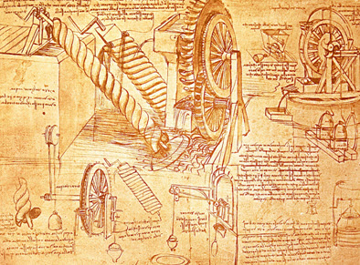
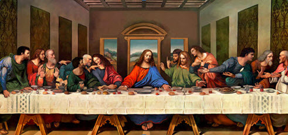
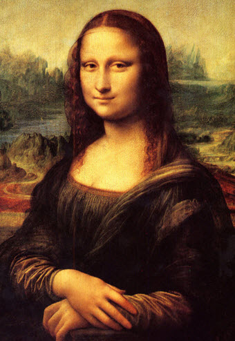
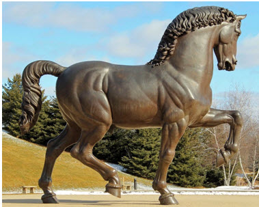

Leonardo used his position as court engineer to study how objects moved at high speeds. For instance, he worked with artillery, gunpowder, and other weapons. He even invented guns with multiple barrels and guns that ran on steam. Meanwhile, Leonardo continued analyzing how to build light and sturdy bridges.
http://pixgood.com/leonardo-da-vinci-inventions-robot.html
Ever since he was a boy, watching the birds of the sky flutter through the air, Leonardo had yearned to fly. Now as an inventor, he set out to achieve his dream. First, he worked on creating a wing- flapping machine, but later switched to using the propeller and hot-air balloons. Inspired by nature, he calculated the muscle mass and area around the body needed to lift it into the air. Also, studying the wind currents' effect on wings, he discovered an early theorem of lift: "The wind that passes under the wing lifts it up just as a wedge lifts a weight. The flight of cranes… which proceeds to raise themselves by many turns after the manner of a screw… and a screw is of the nature of a wedge."
Using his experimental technique to discover mathematics and science, Leonardo invented the structures of the helicopter, musical instruments, and a hydraulic water pump. Another interesting scientific invention was the spring-powered automobile. The springs tightly coiled in barrels, similar to pistons. To start the car, he would push it backwards to turn on the gears. Once released, the automobile would roll away in the direction set by its programmable springs and gears, as it had no steering wheel.
Other than purely science-based constructions, Leonardo used his knowledge of science to paint realistic works of art. From 1478 to 1480, Leonardo painted "Madonna of the Carnation," using oil paints to portray the Virgin Mary and Jesus Christ on her lap, with a carnation flower in her left hand.
Leonardo also painted "The Last Supper" from 1495 to 1498.
Retrieved from: http://www.testimoniesofheavenandhell.com/Pictures-Of-Jesus/2013/04/21/jesus
-picture-supper-leonardo-da-vinci-painting/
Also, he painted the "Mona Lisa", his most treasured accomplishment.
[Photograph]. Retrieved from: http://www.wikiart.org/en
/leonardo-da-vinci/mona-lisa
Leonardo also used his knowledge of muscular and skeletal structure to create the "Gran Cavallo." Although he was sent seventy tons of bronze for this project, Leonardo decided to use clay instead.
by Leonardo da Vinci. [Photograph]. Retrieved
from: https://plus.google.com/105411649804780
754049/about?pid=5989355924528990514&oid=1054
11649804780754049